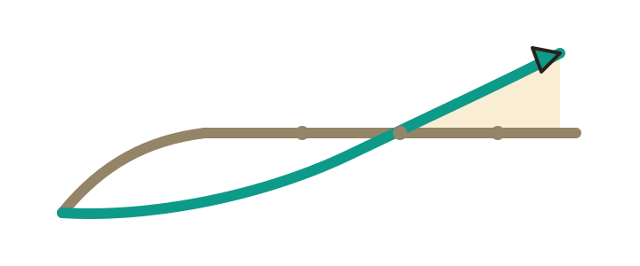
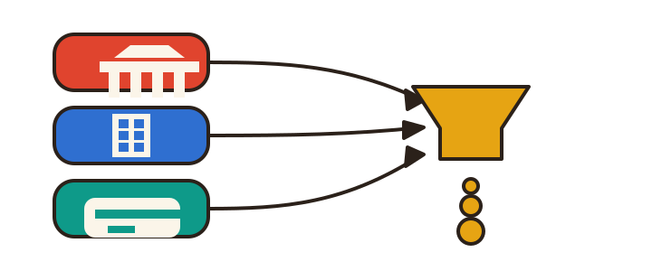
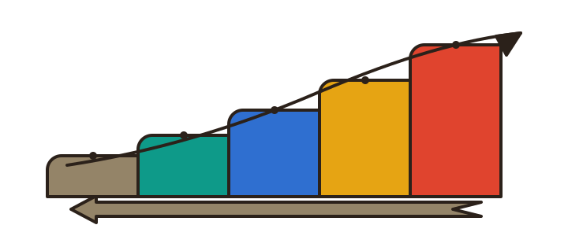

Three countries pay for AI education through three completely different engines. This page shows who writes the cheque in each one, with the 2026 numbers and links — and the one place where the standard advice is wrong.
Writing code stopped being the hard part. You describe an app in plain language and it appears. So the price of "I can use the tool" collapsed, and the money moved up the stack: deciding what to build and why, designing the system, evaluating it, keeping it alive.
Physical AI is the part that did not get commoditized. A robot arm either picks up the block or it does not. No prompt gets you past a gripper that misses by two centimetres. That is why the missions run on robots and get graded on video: the work cannot be faked, so the grade means something.

grey: software generation, flattened and crowded · teal: physical, still climbing
Korea, the United States and Singapore all want more AI-capable workers. They fund it in ways that have almost nothing in common, so the same missions need a different lever in each market.

state budget · enterprise budget · state credit routed through an institution
| 🇰🇷Korea | 🇺🇸United States | 🇸🇬Singapore | |
|---|---|---|---|
| Who pays | The state, then the individual | The employer, then the individual | The state, via an approved institution |
| The mechanism | 국민내일배움카드 (the national training card) → K-Digital Training (KDT) bootcamps | Corporate L&D budgets; marketplaces (Udemy, Coursera) and cohort platforms (Maven) for individuals | SkillsFuture Credit, but only against qualifying programmes |
| 2026 numbers | AI Campus launches in KDT in H1 2026, targeting 10,000 AI specialists at zero self-pay. General KDT starts charging up to 10% self-pay from 2026-01-01. Training allowance rises to ₩200,000/month (was ₩116,000). Card base ₩3M / 5 years, up to ₩5M. | Average senior-leader L&D budget $11.8M. Spend per employee ranges from over $1,700 at small organisations to under $300 at large ones. | Up to S$4,500 combined for citizens aged 40+ (S$500 base + S$4,000 mid-career). The 2020 S$500 tranche expired 2025-12-31. |
| The lever | Get approved. Distribution is state-controlled; the fight is for a KDT slot. | Differentiate. Supply is unlimited and acquisition is expensive — the question is why you and not the other thousand tutorials. | Partner. See the correction below — you cannot simply list a course. |
| The catch | Price anchored near zero. Buyers expect state-funded to mean free. | Marketplaces rent you trust and traffic, then keep the pricing power and the customer list. | Small market, but English-speaking and the gateway to ASEAN. |
"Register with SkillsFuture and absorb the subsidised demand."
That is the advice you will hear, and it does not survive contact with the eligibility rules. Short courses, online subscriptions and standalone workshops generally do not qualify for the S$4,000 SkillsFuture Credit (Mid-Career). What qualifies is narrower: full qualifications from an Institute of Higher Learning, shorter modules that stack toward a full qualification, MOE-subsidised arts qualifications, SkillsFuture Career Transition Programmes (train-and-place), and courses tied to Progressive Wage Model sectors.
What this means for us. A six-week online season — exactly what Physical Spark is designed to run — would not be credit-eligible on its own. Singapore is only reachable by partnering with a polytechnic or university so the missions become stackable modules inside a qualification that already carries approval. That is a slower, relationship-shaped entry, and it should be sequenced third, not first.
We are publishing the correction rather than the pitch-friendly version, for the same reason the Korea playbook does: a plan built on a rule that does not exist fails later and more expensively.
These are rungs, not options — each one is built on the audience the one below it produced. Skipping to the top without the bottom means selling enterprise training with no proof it works.

price climbs to the right · volume falls the same direction
Rungs 1 and 3 have no price because those products do not exist yet. Pricing a self-paced library and a membership before either is built would be inventing a product, and this page is linked from the pitch — anything with a number on it will be quoted back at us.
The three prices above are first-season numbers, not a rate card. They are set to be defensible rather than optimal: the season fee is deliberately low because season one is buying completion-rate data, not revenue; the kit margin is thin because its job is removing an excuse; the B2B day rate is anchored to the per-employee L&D range so it survives procurement. All three get revisited once the first season's completion rate exists.
The sequence is the point: a marketplace is a loan of trust, and loans get repaid. Move the season to your own site once the name carries people on its own — which, for us, means once the review gallery has runs worth watching.
None of this is interesting, and all of it stops a launch harder than a weak mission map does. It is listed here so it gets handled early rather than discovered late.
Subsidy rules change without much warning. Check myskillsfuture.gov.sg and work24.go.kr before committing money or a launch date to anything on this page.